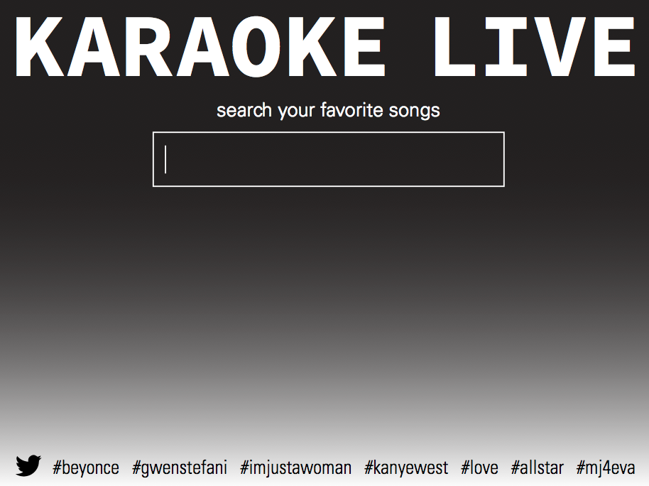
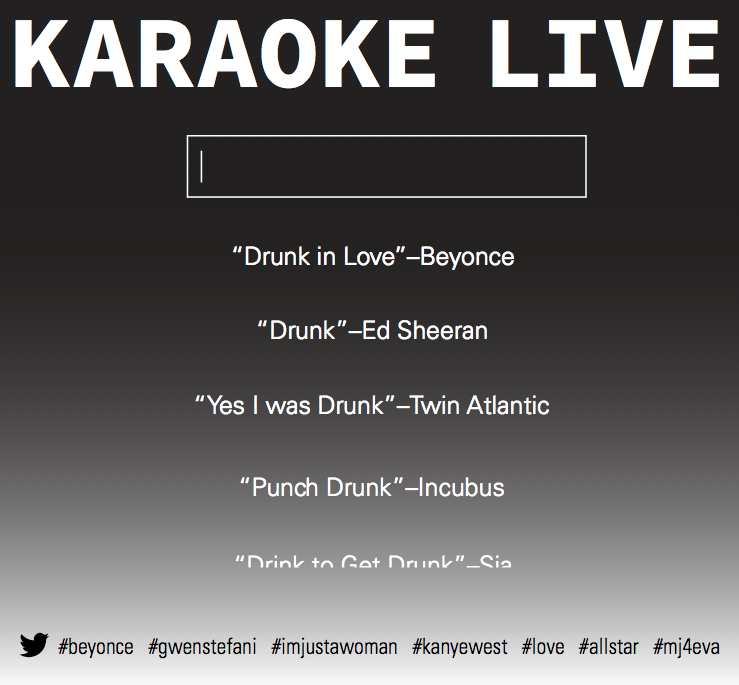
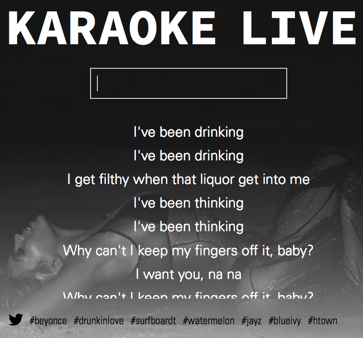

Interviews:
1. How old are you?
2. Where are you from?
3. What do you usually go to the library for?
4. Do you use any library websites?
5. What do you like about the site?
6. What do you dislike about the site?
7. Are you interested in the idea of having an account like
on Amazon or Netflix?
8. Do you like reccommendations online or is there a
certain way you find books?
9. Do you have a smart phone or tablet?
10. What do you mostly use it for? What apps do you use?
Competitive Analysis:
Amazon, Netflix, GoodReads, Barnes and Noble, New York Times
Creative Brief:
For my redesign of the Enoch Pratt
Libary website, I want to make all of
the information accessible and clear.
My audience is primarily people who
actually go to the library and the age
range is technically wide, but I will focus
on more of the tech savvy individuals
in their 20s and 30s. My audience likes
to hang out in the library, where they
work on paper, laptops, or on the library
computers. They like to check out books,
movies, and music, and use resources
for research.
The website looks like it hasn’t been
redesigned in at least ten years, and
looks like it is meant for children. The
catalogue, hours, and locations are very
important parts of the site that need to
be highlighted. The catalogue needs to
be less cluttered, and there needs to
be an opportunity for people to create
an account. Once people have accounts
on the site, they can find other books to
check out, get suggestions from other
readers, find the references from books
they have already read, etc.
The site needs to include everything
that the library has to offer including
music, movies, books, and now ebooks.
It is clear on their site now that they
have ebooks, but they need to be more
accessible and treated as library books.
This means “checking it out,” and
another user can’t download it until the
other person “returns” it.
The final part of my project will be the
responsive mobile and tablet elements,
which will allow users to access hours,
maps, fees, and renewals on less clunky
devices. They can also access the other
information, like the search catalogue
and read their ebooks when they are
on the go.


Time to start thinking about the design! I am trying to focus on the simplicity of the site, so it is clear and easy for the audience to use. Colors will be blue,blue, and white. I also completed the Page Description Diagrams for 6 pages ande made my style tile!
This week, the coding all began! My website is really basic right now. I used the nav structure from bootstrap and everything else is simple, ugly, and not very functional. I had a little bit of a frustrating time with bootstrap, but hopefully it will get better and my website will look good when it's all finished!

My website and my coding skills grew exponentially this week. After some trials and tribulations with javascript, I finally got the mixitup effect to work, and I'm really happy with it! My website looks kind of real, and I'm glad I chose to start with the catalogue. Above is my flat made on inDesign.
I'm making more strides with my website, and I am getting a lot of experience working with jquery plugins for the first time. I am realizing how beneficial they are to designing websites. I can't believe it's my first time using them, because they're easy to figure out, and they make everything look more legitiment.
Today's the day! The library website is due, and I'm totally finished (except one gliche)! I don't think it's perfect but I learned a lot through the process, so I'm ready to use these skills to create a better website for the next project!
I'm excited to learn how to implement APIs into my websites, but right now I am just a bit confused, and I feel limited as to what I am able to do until we talk in class about the options and how it really works. Right now, I am exploring with doing a site about music, but I'm not sure if it's really what I want to do.
SO Project 2 and I didn't get along so well. Writing Javascript is definitely not my favorite thing. I liked my mockups for the project, but the code was turning out to be pretty pointless, because it was beyond my skill set.
  